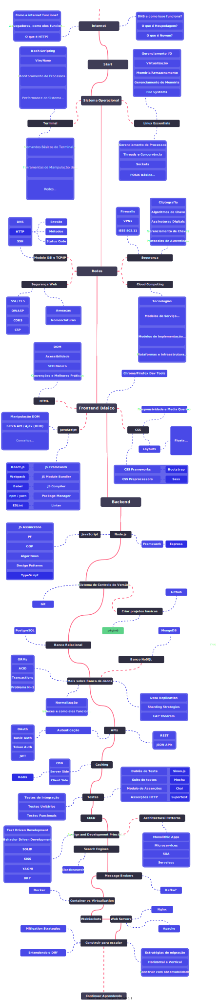

Hi, I'm Francisco
a back end junior developer
lab
Aprender é uma longa trajetória, para acompanhar e documentar meu desenvolvimento criei esse laborátorio. Um local onde posso manter um registro das minhas tentativas e orientar melhor os próximos passos. Ele é um complemento ao que é desenvolvido no meu GitHub.
tools
let listOfTools = ['Shell', 'Shell Script', 'Linux', 'Mac OS','HTML','CSS', 'JavaScript','Git','Github','React.js', 'Webpack', 'NPM', 'Jest''Node.js','Express', 'API REST', 'Mocha''SQL','PostgreSQL', 'MongoDB', 'Docker','TDD', 'MVC', 'Scrum', 'Kanban']
the roadmap
keep learning
Meu nome é Francisco Diniz. Amo resolver problemas com o uso de tecnologia. Sou fascinado pelo livre conhecimento encontrado na comunidade open source, gosto de descobrir coisas novas. Quando não estou aprendendo ou pensando sobre aprender, estou olhando todas as coisas fora da caixa. Tenho contato com computadores desde os 12 anos, hoje estudo com o objetivo de conseguir meu primeiro trabalho como desenvolvedor back end.

writing
Nullam vehicula diam vel dolor cursus, ut tincidunt erat commodo. Cras malesuada vitae ante ut ornare. In sodales gravida libero, volutpat condimentum sem pretium a. Nullam eget orci metus. Pellentesque tincidunt nunc vitae turpis condimentum, in sollicitudin est consectetur. Duis porta sem a dui eleifend, in commodo purus consequat. Proin rutrum blandit dolor, et rutrum eros dignissim sit amet.

projects
Phasellus tincidunt sagittis sem quis volutpat. Nulla vitae tincidunt nulla. Mauris non ex vel erat gravida posuere ut vel nibh. Phasellus pretium eget arcu eu ornare. Integer sit amet facilisis lorem. Aenean non ultricies tortor, eu condimentum risus. Duis maximus sapien ac dolor viverra vestibulum. Proin rutrum blandit dolor, et rutrum eros dignissim sit amet. Sed quis magna tincidunt, faucibus purus quis, blandit lectus.